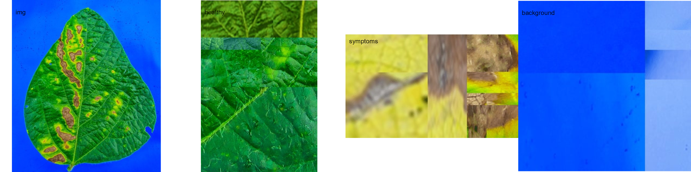
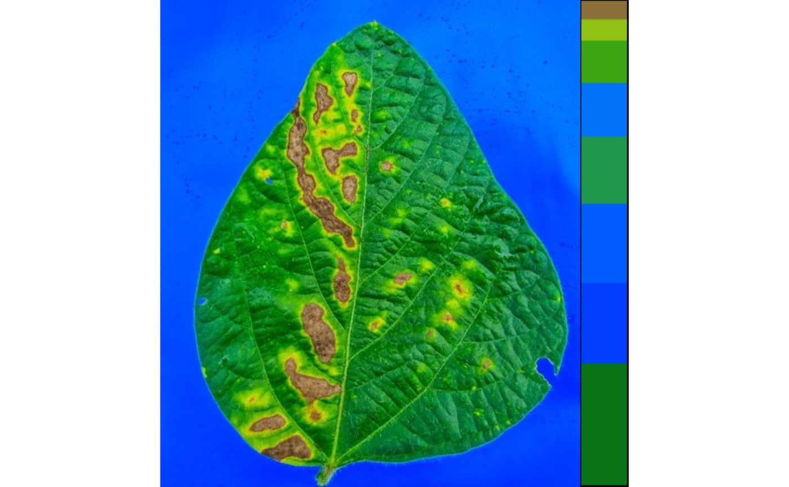
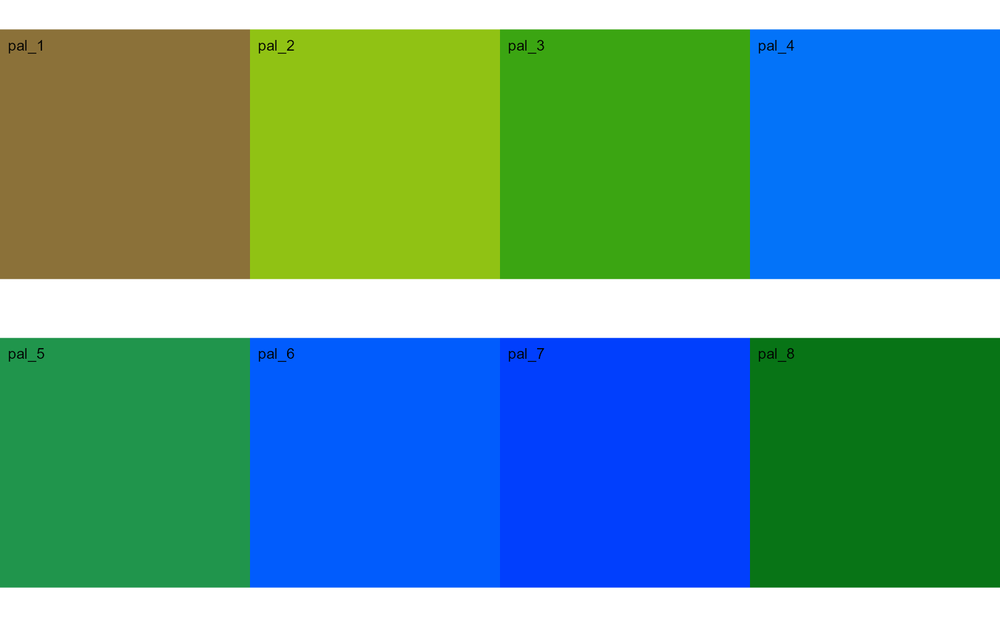
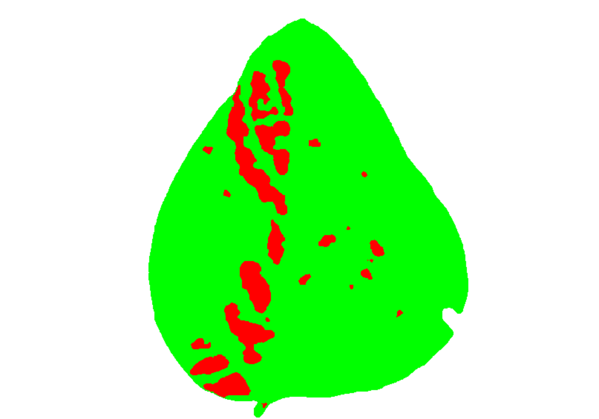
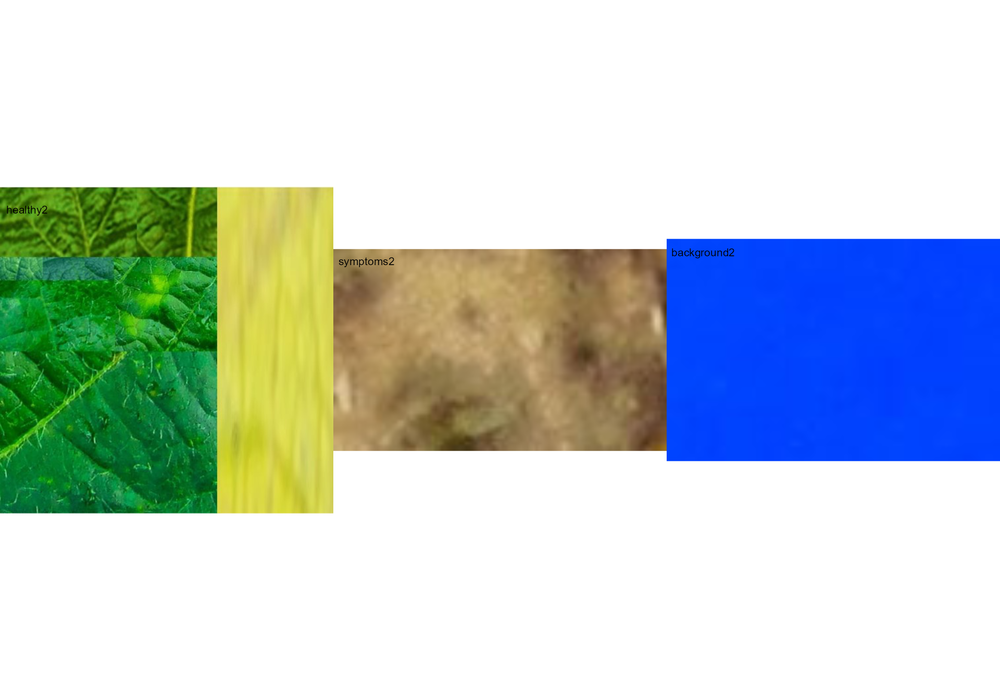
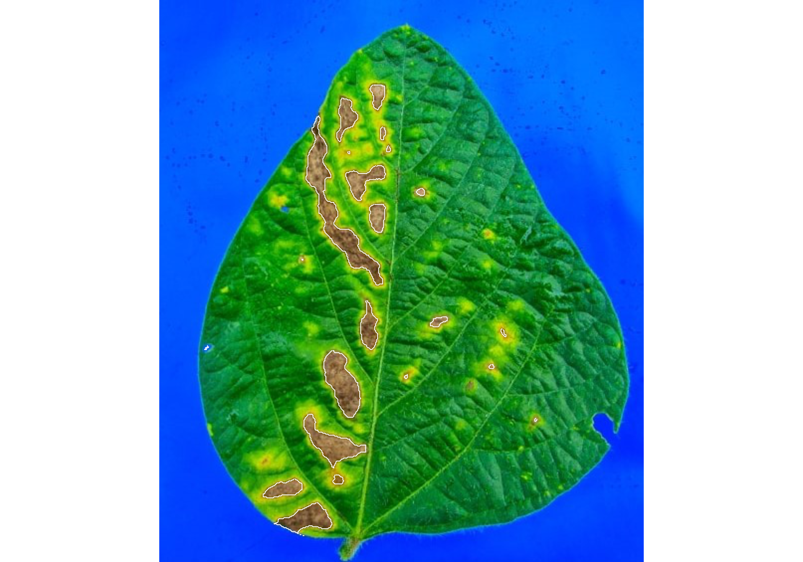

Phytopatometry in R with the package pliman
Tiago Olivoto
2024-10-27
Source:vignettes/phytopatometry.Rmd
phytopatometry.RmdSingle images
library(pliman)
#> |======================================================|
#> | Welcome to the pliman package (version 3.0.0)! |
#> | Developed collaboratively by NEPEM - nepemufsc.com |
#> | Group lead: Prof. Tiago Olivoto |
#> | For citation: type `citation('pliman')` |
#> | We welcome your feedback and suggestions! |
#> |======================================================|
# set the path directory
path_soy <- "https://raw.githubusercontent.com/TiagoOlivoto/images/master/pliman"
# import images
img <- image_import("leaf.jpg", path = path_soy)
healthy <- image_import("healthy.jpg", path = path_soy)
symptoms <- image_import("sympt.jpg", path = path_soy)
background <- image_import("back.jpg", path = path_soy)
image_combine(img, healthy, symptoms, background, ncol = 4)
Image palettes
Sample palettes can be created by manually sampling small areas of
representative images and producing a composite image that represents
each of the desired classes (background, healthy, and symptomatic
tissues). Another approach is to use the image_palette()
function to generate sample color palettes.
pals <- image_palette(img, npal = 8, return_pal = TRUE)
image_combine(pals$palette_list, ncol = 4)
# default settings
res <-
measure_disease(img = img,
img_healthy = healthy,
img_symptoms = symptoms,
img_background = background)
res$severity
#> healthy symptomatic
#> 1 89.41419 10.58581Alternatively, users can create a mask instead of displaying the original image.
# create a personalized mask
res2 <-
measure_disease(img = img,
img_healthy = healthy,
img_symptoms = symptoms,
img_background = background,
show_original = FALSE, # create a mask
show_contour = FALSE, # hide the contour line
col_background = "white", # default
col_lesions = "red", # default
col_leaf = "green") # default
res2$severity
#> healthy symptomatic
#> 1 89.12594 10.87406Variations in image palettes
The results may vary depending on how the palettes are chosen and are subjective due to the researcher’s experience. In the following example, I present a second variation in the color palettes, where only the necrotic area is assumed to be the diseased tissue. Therefore, the symptomatic area will be smaller than in the previous example.
# import images
healthy2 <- image_import("healthy2.jpg", path = path_soy)
symptoms2 <- image_import("sympt2.jpg", path = path_soy)
background2 <- image_import("back2.jpg", path = path_soy)
image_combine(healthy2, symptoms2, background2, ncol = 3)
res3 <-
measure_disease(img = img,
img_healthy = healthy2,
img_symptoms = symptoms2,
img_background = background2)
res3$severity
#> healthy symptomatic
#> 1 93.70262 6.297382Lesion features
res4 <-
measure_disease(img = img,
img_healthy = healthy,
img_symptoms = symptoms,
img_background = background,
show_features = TRUE,
marker = "area")
res4$shape
#> id mx my area perimeter radius_mean radius_min radius_max
#> 1 1 221.3165 113.4328 1031 199.61017 22.385350 0.5540181 39.303781
#> 2 2 189.7396 129.3218 1325 252.96551 20.485982 1.7037877 38.799639
#> 3 3 177.8770 213.1486 3732 477.54625 50.090770 1.0902575 94.465812
#> 4 4 209.8401 193.4394 1828 255.48023 23.996324 1.5966013 42.398981
#> 5 5 263.2815 192.5938 142 45.48528 6.358657 4.4175177 8.445866
#> 6 6 119.5743 201.5020 100 36.79899 5.228316 3.3866985 6.858005
#> 8 8 144.9601 260.6239 73 30.55635 4.455795 2.9165344 5.893080
#> 9 9 210.8900 328.2504 927 149.46804 18.429302 7.4482266 30.835115
#> 11 11 280.3464 323.9627 271 64.69848 9.081303 5.3468492 12.656433
#> 12 12 347.0344 334.8566 292 67.11270 9.362710 5.4703505 12.763533
#> 15 15 183.8025 384.5571 1873 192.19596 24.893179 12.8303409 38.668805
#> 16 16 333.2704 369.1409 154 47.04163 6.653785 4.2700345 9.079004
#> 17 17 249.6548 376.3188 148 47.45584 6.708013 3.3705340 9.715189
#> 19 19 172.3723 449.2197 2254 281.35029 28.651469 12.6030915 47.507444
#> 23 23 109.2006 464.1006 267 72.69848 8.948391 3.5339436 13.739762
#> 24 24 122.6708 492.3326 941 134.63961 17.881356 9.6681628 28.326603
#> 25 25 149.0925 520.2243 1291 164.53911 21.110835 11.0842927 32.910027
#> radius_sd diam_mean diam_min diam_max maj_axis min_axis length
#> 1 11.2387019 44.77070 1.108036 78.60756 24.156267 6.570653 76.56860
#> 2 9.0009555 40.97196 3.407575 77.59928 19.673400 10.643388 66.44392
#> 3 25.4804934 100.18154 2.180515 188.93162 54.673996 12.943501 185.16314
#> 4 10.1528815 47.99265 3.193203 84.79796 22.384645 13.318187 73.96521
#> 5 1.2039912 12.71731 8.835035 16.89173 5.315765 3.686707 15.63089
#> 6 1.0354915 10.45663 6.773397 13.71601 4.183570 3.297236 12.95079
#> 8 0.8150592 8.91159 5.833069 11.78616 3.669126 2.651668 11.13429
#> 9 6.4491505 36.85860 14.896453 61.67023 17.899320 7.779947 60.30752
#> 11 2.0643425 18.16261 10.693698 25.31287 7.932278 4.871938 24.62782
#> 12 2.0362289 18.72542 10.940701 25.52707 8.065112 5.166262 25.00000
#> 15 7.4860986 49.78636 25.660682 77.33761 22.941735 12.208977 73.66650
#> 16 1.3897121 13.30757 8.540069 18.15801 5.608257 3.834645 17.24808
#> 17 1.7199164 13.41603 6.741068 19.43038 5.985572 3.472223 18.38034
#> 19 9.8999251 57.30294 25.206183 95.01489 26.392194 14.898455 87.42711
#> 23 2.8680352 17.89678 7.067887 27.47952 8.113634 4.726704 26.00297
#> 24 5.5775852 35.76271 19.336326 56.65321 16.806900 8.253155 54.07933
#> 25 6.0422992 42.22167 22.168585 65.82005 19.273430 10.509904 62.91489
#> width
#> 1 22.625870
#> 2 37.438748
#> 3 46.019408
#> 4 46.409925
#> 5 10.656511
#> 6 9.701347
#> 8 7.941107
#> 9 23.673758
#> 11 14.817363
#> 12 15.199658
#> 15 34.959699
#> 16 11.608204
#> 17 10.650662
#> 19 54.480476
#> 23 14.011945
#> 24 22.456618
#> 25 32.794445
res4$statistics
#> stat value
#> 1 n 17.0000
#> 2 min_area 73.0000
#> 3 mean_area 979.3529
#> 4 max_area 3732.0000
#> 5 sd_area 1002.9329
#> 6 sum_area 16649.0000Interactive disease measurements
An alternative approach to measuring disease percentage is available
through the measure_disease_iter() function. This function
offers an interactive interface that empowers users to manually select
sample colors directly from the image. By doing so, it provides a highly
customizable analysis method.
One advantage of using measure_disease_iter() is the
ability to utilize the “mapview” viewer, which enhances the analysis
process by offering zoom-in options. This feature allows users to
closely examine specific areas of the image, enabling detailed
inspection and accurate disease measurement.
img <- image_pliman("sev_leaf.jpg", plot = TRUE)
measure_disease_iter(img, viewer = "mapview")